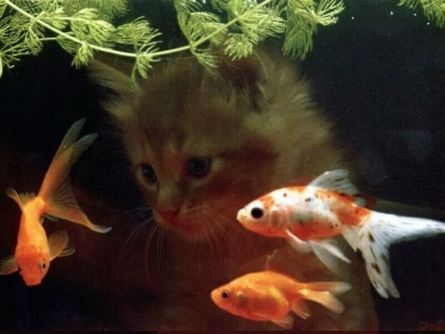

Kucing memiliki berbagai kebiasaan unik dalam kehidupan sehari-hari. Salah satu kebiasaan paling umum adalah tidur dalam waktu yang lama, karena kucing bisa tidur hingga 12–16 jam per hari untuk menghemat energi.
Kucing juga sering membersihkan tubuhnya dengan menjilat bulu (grooming) agar tetap bersih dan mengurangi bau. Selain itu, kucing memiliki sifat penasaran dan suka menjelajahi lingkungan sekitarnya.
Kebiasaan lain adalah bermain dan berburu, baik dengan benda kecil maupun mainan, karena ini merupakan insting alami mereka. Kucing juga sering menandai wilayahnya dengan menggosokkan tubuh atau mencakar benda di sekitarnya.